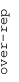
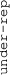

These results are also available as PDF and EPS documents.
Depending on your display resolution, scrolling or zooming may be necessary.
|  |
| 3 |
| 0 |
| -3 |
|  |
| GO:0006413 translational initiation | |||||||||||
| GO:0006614 SRP-dependent cotranslational protein targeting to membrane | |||||||||||
| GO:0002181 cytoplasmic translation | |||||||||||
| GO:0003735 structural constituent of ribosome | |||||||||||
| GO:0022625 cytosolic large ribosomal subunit | |||||||||||
| GO:0042273 ribosomal large subunit biogenesis | |||||||||||
| GO:0003678 DNA helicase activity | |||||||||||
| GO:0010332 response to gamma radiation | |||||||||||
| GO:0048268 clathrin coat assembly | |||||||||||
| GO:0003746 translation elongation factor activity | |||||||||||
| GO:0008536 Ran GTPase binding | |||||||||||
| GO:0043488 regulation of mRNA stability | |||||||||||
| GO:0033209 tumor necrosis factor-mediated signaling pathway | |||||||||||
| GO:0002479 antigen processing and presentation of exogenous peptide antigen via MHC class I, TAP-dependent | |||||||||||
| GO:0006521 regulation of cellular amino acid metabolic process | |||||||||||
| GO:0038061 NIK/NF-kappaB signaling | |||||||||||
| GO:0010972 negative regulation of G2/M transition of mitotic cell cycle | |||||||||||
| GO:0031146 SCF-dependent proteasomal ubiquitin-dependent protein catabolic process | |||||||||||
| GO:0051437 positive regulation of ubiquitin-protein ligase activity involved in regulation of mitotic cell cycle transition | |||||||||||
| GO:0002223 stimulatory C-type lectin receptor signaling pathway | |||||||||||
| GO:0090263 positive regulation of canonical Wnt signaling pathway | |||||||||||
| GO:0061418 regulation of transcription from RNA polymerase II promoter in response to hypoxia | |||||||||||
| GO:0070182 DNA polymerase binding | |||||||||||
| GO:0008080 N-acetyltransferase activity |